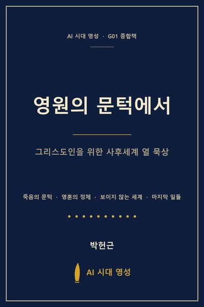

미리보기 · 시즌 2 · G01 종합책
그리스도인을 위한 사후세계 열 묵상
모든 그리스도인은 두 세계의 경계에서 살아갑니다. 손에 잡히는 오늘과 손에 잡히지 않는 영원. 보이는 세상의 분주함과 보이지 않는 세계의 고요함. 그 두 세계 사이에 한 영혼이 다리처럼 놓여 있고, 우리는 그 다리 위에서 매일을 살아갑니다.
이 책은 그 다리 위에서 발걸음을 가다듬으려는 작업입니다. 죽음의 문턱부터 부활의 아침까지, 영혼의 행로부터 천사의 사역까지, 낙원과 지옥의 갈림길부터 마지막 심판의 의미까지 — 사후세계라는 한 단어 안에 담긴 그리스도교의 가장 깊은 묵상을 열 갈래로 펼쳐 놓았습니다.
이 책은 100권 영성 시리즈의 첫 그룹 G01을 한 권으로 묶은 종합본입니다. 열 권 각각의 본문을 거의 그대로 유지하면서, 그 사이를 흐르고 있던 결을 네 갈래로 모았습니다. 한 권씩 따로 읽을 때 보이지 않던 결이 한 권으로 모이고 나니 비로소 또렷이 드러난다는 것이, 종합이라는 작업의 가장 정직한 보람일 것입니다.
네 갈래는 이렇게 흐릅니다. 죽음의 문턱과 그 너머의 빛, 영혼의 정체에 대한 정직한 응시, 보이지 않는 세계의 풍경, 그리고 마지막 일들 — 부활과 심판에 이르는 영원의 자리. 이 넷은 따로 흐르는 것 같으면서도 결국 한 강을 이룹니다.
1부 — 죽음의 문턱은 죽음 앞에 정직하게 선 자의 시선을 보고, 2부 — 영혼의 정체는 영혼이 무엇이고 어디로 가는가를 묻습니다. 3부 — 보이지 않는 세계는 낙원·영계·천사로 이어지는 베일 너머의 풍경을 그리고, 4부 — 마지막 일들은 부활과 심판에서 모든 길이 만나는 자리를 응시합니다.
이 책은 사후세계의 모든 질문에 답하지 않습니다. 다만 그 질문들 앞에서 두려워하지 않을 수 있는 자리, 곧 영원의 입장에서 오늘을 다시 보는 묵상의 자리로 한 사람을 데려가려 합니다. 답을 서두르기보다 호흡을 가다듬는 자리, 두려움 너머의 약속을 함께 응시하는 자리. 이 책이 그런 자리가 되어 드린다면, G01 열 권을 한 권으로 묶은 의미는 충분할 것입니다.
한 번에 다 읽어내실 책이 아닙니다. 한 장씩, 한 묵상씩 호흡을 따라 가져가시면 됩니다. 이제 첫 장을 펼쳐 주십시오. 보이지 않는 세계의 문 앞에서, 그러나 두려움이 아니라 약속을 보면서, 한 호흡씩 함께 걸어가 봅시다.